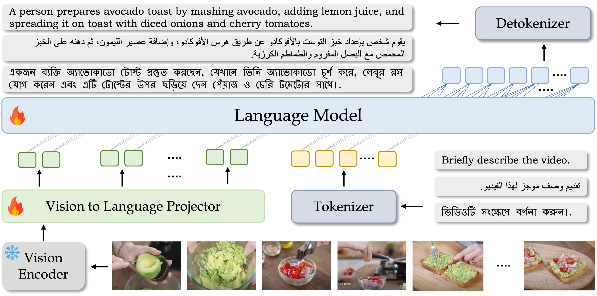
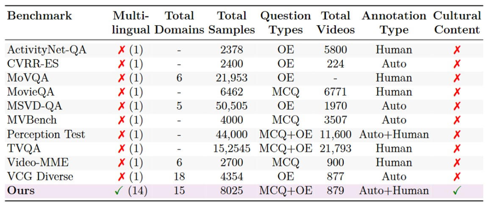
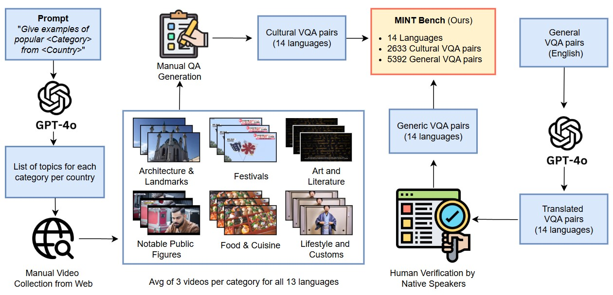
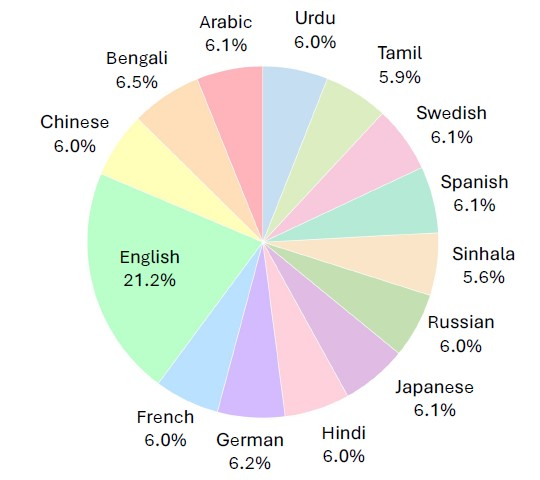
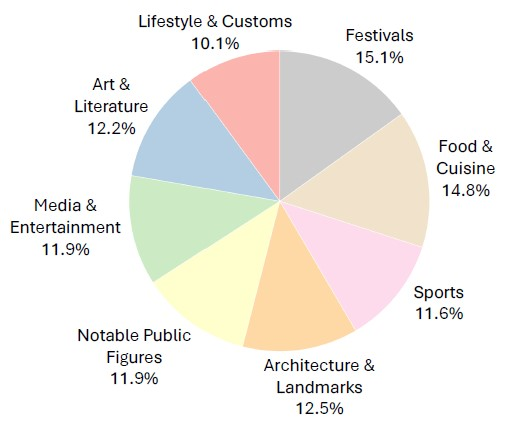
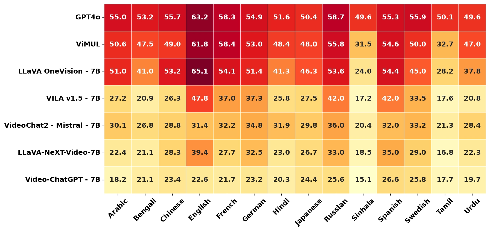
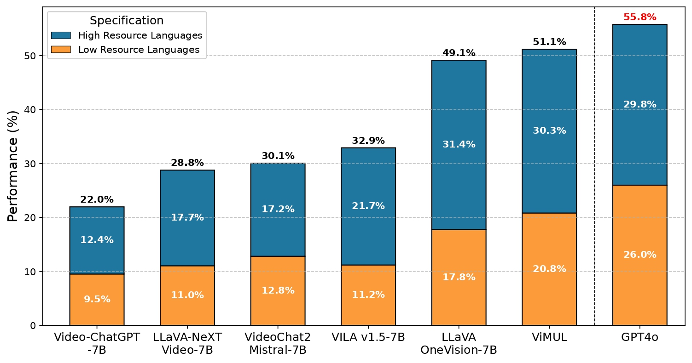
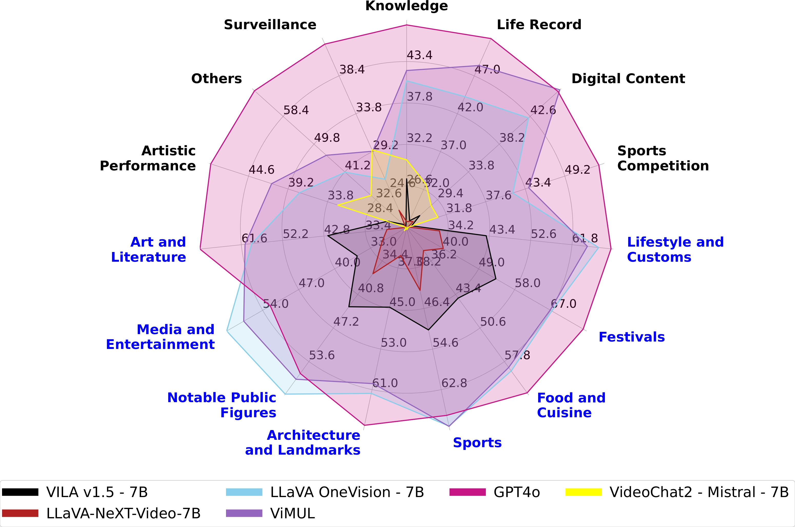
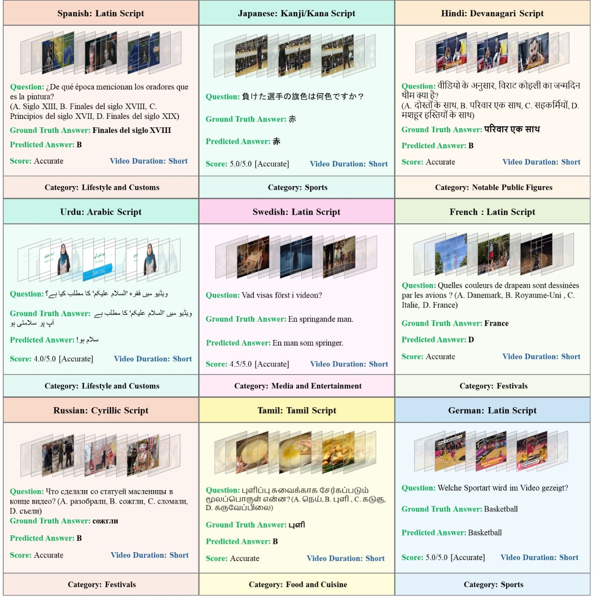

Large multimodal models (LMMs) have recently gained attention due to their effectiveness to understand and generate descriptions of visual content. Most existing LMMs are in English language. While few recent works explore multilingual image LMMs, to the best of our knowledge, moving beyond the English language for cultural and linguistic inclusivity is yet to be investigated in the context of video LMMs. In pursuit of more inclusive video LMMs, we introduce a multilingual Video LMM benchmark, named ViMUL-Bench, to evaluate Video LMMs across 14 languages, including both low and high-resource languages: English, Chinese, Spanish, French, German, Hindi, Arabic, Russian, Bengali, Urdu, Sinhala, Tamil, Swedish, and Japanese. Our ViMUL-Bench is designed to rigorously test video LMMs across 15 categories including eight culturally diverse categories, ranging from lifestyles and festivals to foods and rituals and from local landmarks to prominent cultural personalities. ViMUL-Bench comprises both open-ended (short and long-form) and multiple-choice questions spanning various video durations (short, medium, and long) with 8k samples that are manually verified by native language speakers. In addition, we also introduce a machine translated multilingual video training set comprising 1.2 million samples and develop a simple multilingual video LMM, named ViMUL, that is shown to provide a better tradeoff between high-and low-resource languages for video understanding. We hope our ViMUL-Bench and multilingual video LMM along with a large-scale multilingual video training set will help ease future research in developing cultural and linguistic inclusive multilingual video LMMs. Our proposed benchmark, video LMM and training data will be publicly released.

Figure: ViMUL is designed to comprehend and generate content in 14 different languages: Arabic, Bengali, Chinese, English, French, German, Hindi, Japanese, Russian, Sinhala, Spanish, Swedish, Tamil, and Urdu, covering at least two-thirds of the global population. The model employs a vision encoder to process video frames, followed by a vision-to language projector and an LLM. The projected features are then concatenated with the user query and fed into the LLM to generate a response.
ViMUL LLM architecture is derived from LLaVA-OneVision. It features a three-stage architecture: (1) a frozen SigLIP visual encoder, (2) a two-layer MLP vision-language projector, and (3) a decoder-only multilingual LLM based on Qwen-2.0. Input video frames are sampled at 1 FPS and passed through the SigLIP encoder. The output features are pooled and projected into the language model’s embedding space. These are concatenated with multilingual query tokens and fed into the LLM to generate culturally grounded responses. ViMUL is trained end-to-end using a next-token prediction loss over 1.2 million QA pairs across 14 languages, combining both open-ended and multiple-choice supervision via multilingual instruction tuning. This enables robust generalization across both high- and low-resource languages.

Table: Comparison of video LMM benchmarks emphasizing multilingual and cultural understanding. Domains represent the aspects covered by each dataset for different languages. Annotation Type is categorized as follows: Human - Questions were created in the local language. Human+Auto – Questions were generated or translated using GPT-4/Google API and later validated by human experts. Auto: Questions were generated or translated automatically without human validation. ‘-’ indicates that information is not available.
Overview of ViMUL-Bench Dataset. ViMUL-Bench consists of 8,025 culturally grounded and linguistically diverse video QA pairs across 15 categories in 14 languages, spanning high- and low-resource languages. It incorporates video content from diverse regions and cultural settings, using 9 language scripts and covering multiple language families. ViMUL-Bench emphasizes spatio-temporal and cultural reasoning in real-world videos across the following categories:
Cultural Categories
Generic Categories

Figure: Data collection and verification pipeline. Our benchmark consists of both cultural specific video content curated from scratch (left) and generic Video-QA pairs sourced from existing video LMM benchmarks (right). Cultural videos are scrapped using a (country, language, sub-topic) triplet and manually filtered for relevance and private information. With the help of native speakers, we create QA pairs for each language from scratch (except English), with cultural QA pairs translated into English using GPT-4o. Our ViMUL-Bench has diverse question types and features approximately 8K QA pairs in 14 languages.
Our ViMUL-Bench dataset reflects the multilingual and cultural diversity essential for inclusive video understanding. It includes 8,025 high-quality QA pairs across 14 languages and 9 scripts, spanning both high- and low-resource settings, from 879 videos. The benchmark features 15 distinct categories (generic and cultural), and supports multiple question types, including multiple-choice and short/long open-ended formats. All samples are manually verified by native-language experts to ensure linguistic accuracy, cultural relevance, and robust multilingual coverage.


Figure: Data statistics for ViMUL-Bench where is displays the distribution of QA pairs among 14 languages (left) and distribution of QA pairs among 8 cultural categories (right).
We present our evaluations with 6 recent state-of-the-art LMMs along with ViMUL-LLM, across 14 languages, for both openended and mcq based QA pairs.
In the below heatmap figure, we present results for both open-source and closed-source models, on the ViMUL-Bench.

Performance comparison of video LMMs across 14 languages on ViMUL-Bench. Average accuracy is reported across all question types for each language. Each box represents a model’s accuracy for a specific language, with darker shades indicating higher accuracy. The results show that the closed-source model, GPT-4o, generally outperforms its open-source counterparts. In contrast to highresource languages, methods struggle on low-resource languages (e.g., Sinhala, Urdu, Tamil). Among open-source models, our ViMUL provides a better tradeoff between high and low-resource languages, achieving an overall gain of 2% over LLaVA-OneVision.


Figure: Figure on the (left) illustrates performance comparison of open-source versus closed-source models, with a distinction between low-resource and high-resource languages in our ViMUL-Bench. On the other hand, the Figure on the (right) portrays the performance of different video LMMs across 15 diverse categories (both generic and cultural) in our ViMUL-Bench. The categories in black represents generic categories, and categories in blue represents the cultural categories.
Success cases prediction: We present some qualitative examples for success cases by ViMUL-LLM on various language and categories.

@misc{shafique2025culturallydiversemultilingualmultimodalvideo,
title={A Culturally-diverse Multilingual Multimodal Video Benchmark & Model},
author={Bhuiyan Sanjid Shafique and Ashmal Vayani and Muhammad Maaz and Hanoona Abdul Rasheed and Dinura Dissanayake and Mohammed Irfan Kurpath and Yahya Hmaiti and Go Inoue and Jean Lahoud and Md. Safirur Rashid and Shadid Intisar Quasem and Maheen Fatima and Franco Vidal and Mykola Maslych and Ketan Pravin More and Sanoojan Baliah and Hasindri Watawana and Yuhao Li and Fabian Farestam and Leon Schaller and Roman Tymtsiv and Simon Weber and Hisham Cholakkal and Ivan Laptev and Shin'ichi Satoh and Michael Felsberg and Mubarak Shah and Salman Khan and Fahad Shahbaz Khan},
year={2025},
eprint={2506.07032},
archivePrefix={arXiv},
primaryClass={cs.CL},
url={https://arxiv.org/abs/2506.07032},
}